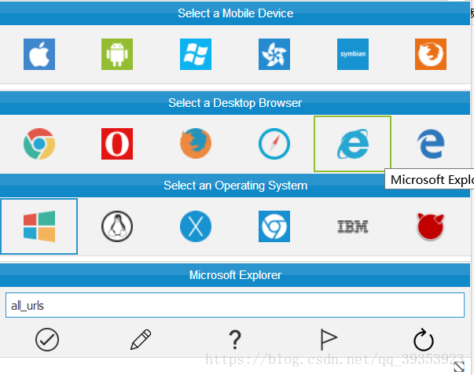
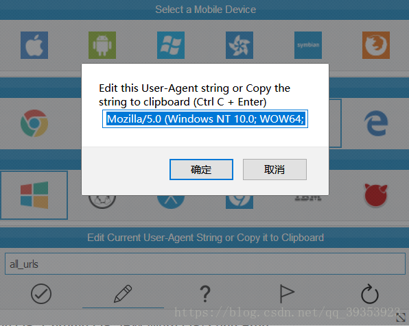

实验环境:
kali:192.168.136.128/24
Metasploitable:192.168.136.129/24
Nikto简介
Web扫描工具大部分都支持两种扫描模式:代理截断模式和主动扫描模式
Nikto:是一个Web服务器扫描程序，主要是去检查软件版本信息,搜索存在的安全隐患的文件,服务器配置漏洞,Web Application层面的安全隐患等,也能避免404误判（原因：很多服务器不遵循RFC标准，对于不存在的对象返回200响应码）；依据响应文件内容判断，不同扩展名的文件404响应内容不同；去时间信息后的内容取MD5值；不建议用-no404参数（-no404参数指去不校验404误判,它还可以捕获并打印收到的任何cookie.
Wiki百科对其功能的介绍
Nikto is an Open Source (GPL) web server scanner which performs comprehensive tests against web servers for multiple items, including over 6700 potentially dangerous files/CGIs, checks for outdated versions of over 1250 servers, and version specific problems on over 270 servers. It also checks for server configuration items such as the presence of multiple index files, HTTP server options, and will attempt to identify installed web servers and software. Scan items and plugins are frequently updated and can be automatically updated.
Nikto是一个开源（GPL）Web服务器扫描程序，可针对多个项目对Web服务器执行全面测试，包括超过6700个潜在危险文件/ CGI，检查超过1250台服务器的过期版本，以及超过270台服务器上的版本特定问题。它还会检查服务器配置项，例如是否存在多个索引文件，HTTP服务器选项，并将尝试识别已安装的Web服务器和软件。扫描项目和插件经常更新，可以自动更新。
开始操作
1 | root@kali:~# nikto -update #从CIRT.net网站更新nikto的数据库和插件 |


1 | 在STATIC-COOKIE这个命令下取消注释, |